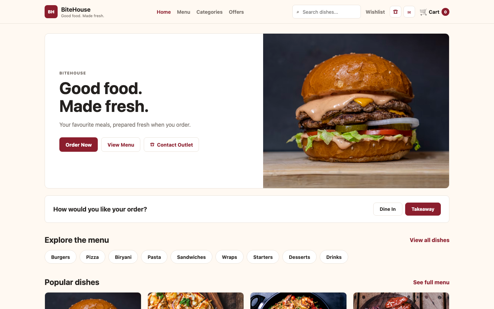
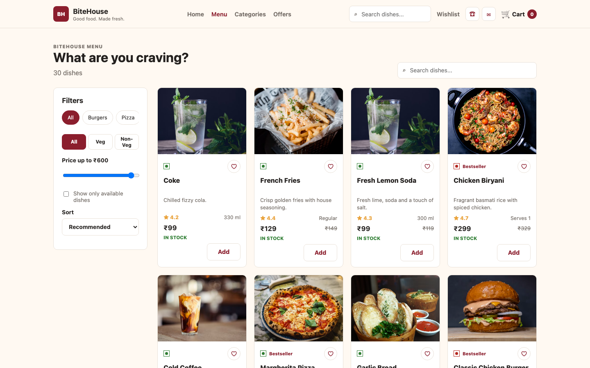
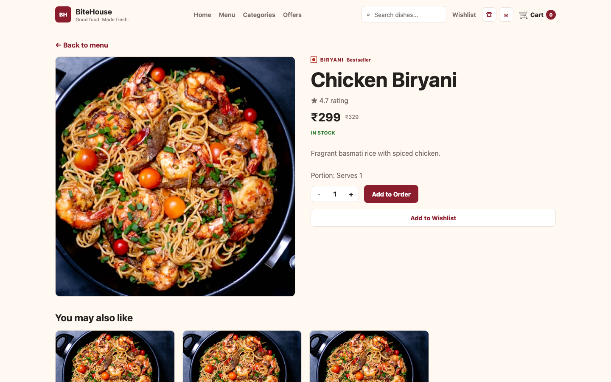
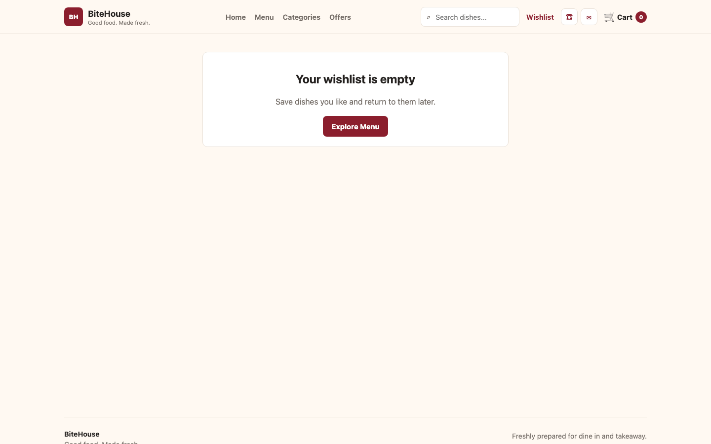

Good food. Made fresh.
Project Documentation
BiteHouse is a responsive restaurant ordering application developed with React. It allows customers to explore a food menu, find dishes, choose dine-in or takeaway, manage an order, and complete a mock checkout.
The application presents approximately 30 dishes across categories such as burgers, pizza, biryani, pasta, sandwiches, wraps, starters, desserts, and drinks. Every dish includes a name, description, food image, price, rating, availability, and vegetarian or non-vegetarian indicator.
The following flowchart shows the main customer journey from opening BiteHouse through order confirmation.
| React Topic | Purpose in BiteHouse | Main Location |
|---|---|---|
| Functional Components | Build reusable UI sections and pages. | src/components, src/pages |
| JSX | Describe the interface using HTML-like JavaScript syntax. | All .jsx files |
| Props | Pass dishes, callbacks, quantities, and display values between components. | ProductCard, ProductGrid, QuantitySelector |
| useState | Manage interactive values such as search, filters, forms, modals, and mobile menus. | Shop.jsx, Checkout.jsx, Navbar.jsx |
| useEffect | Synchronize React state with localStorage and URL search parameters. | Context providers, Shop.jsx |
| useMemo | Compute filtered menu results and detailed cart/wishlist data efficiently. | Shop.jsx, context providers |
| Context API | Share cart, wishlist, and order settings across routes. | src/context |
| React Router | Provide client-side navigation and dynamic dish routes. | App.jsx, navigation components |
| Conditional Rendering | Display available/unavailable actions, empty states, forms, and success screens. | Cards and page components |
| List Rendering and Keys | Render categories, dishes, cart rows, and table options from arrays. | Menu, Home, Cart, selectors |
| Controlled Forms | Keep checkout and notification input values in React state. | Checkout.jsx, NotifyModal.jsx |
| Event Handling | Respond to clicks, submissions, input changes, and keyboard actions. | Throughout the application |
| Custom Hooks | Expose clean access to shared contexts. | useCart, useWishlist, useOrder |
| StrictMode | Enable extra development checks for component behavior. | main.jsx |
Functional components are JavaScript functions that return JSX. BiteHouse separates the UI into focused units such as Navbar, ProductCard, SearchBar, NotifyModal, and complete route pages. JSX keeps the structure close to its dynamic data and event handlers.
Used in: src/components/*.jsx and src/pages/*.jsx
Props allow a parent to configure a reusable child. ProductGrid receives a filtered products array and passes each dish to ProductCard. QuantitySelector receives quantity, max, and onChange, so the same control can enforce each dish's stock limit.
Used in: ProductGrid.jsx, ProductCard.jsx, QuantitySelector.jsx, EmptyState.jsx
The useState hook stores values that change while the user interacts with the app. The Menu page tracks search text, selected category, maximum price, sorting, stock-only mode, food type, and the dish selected for notification. Checkout stores customer form values, errors, and the generated order ID.
Used in: Shop.jsx, Home.jsx, ProductDetails.jsx, Checkout.jsx, NotifyModal.jsx, Navbar.jsx
useEffect performs work after rendering when specified dependencies change. The context providers save cart, wishlist, order type, and table values to localStorage. The Menu page also responds to URL search and category parameters. NotifyModal registers and cleans up its Escape-key listener.
Used in: CartContext.jsx, WishlistContext.jsx, OrderContext.jsx, Shop.jsx, NotifyModal.jsx
useMemo stores a calculated result until its dependencies change. BiteHouse uses it for menu filtering and sorting, for turning stored cart IDs into detailed dish objects, and for building the wishlist's dish collection.
Used in: Shop.jsx, CartContext.jsx, WishlistContext.jsx
Context shares state without passing it through every intermediate component. CartProvider exposes items, totals, quantity changes, removal, and clearing. WishlistProvider exposes saved dishes and toggle actions. OrderProvider exposes Dine In/Takeaway and table selection. Custom hooks such as useCart() provide a simple component-facing API.
Used in: src/context/CartContext.jsx, WishlistContext.jsx, OrderContext.jsx
BrowserRouter enables navigation without complete page reloads. Routes map URLs to page components, while Link and NavLink provide navigation. /product/:id is a dynamic route; ProductDetails reads the ID with useParams. Search navigation uses useNavigate, and Checkout uses Navigate to prevent access with an empty cart.
Used in: main.jsx, App.jsx, Navbar.jsx, ProductDetails.jsx, Checkout.jsx
React expressions select the correct interface for the current state. Available dishes show Add, while unavailable dishes show Notify Me. Empty cart and wishlist states render dedicated messages. Checkout switches between Takeaway customer fields, the Dine In table message, and the final confirmation screen.
Used in: ProductCard.jsx, Cart.jsx, Wishlist.jsx, Checkout.jsx
JavaScript map() converts arrays into components. This is used for dish cards, categories, cart items, payment options, related dishes, and Table 1–15. Stable IDs are used as React keys to help React update lists correctly.
Used in: ProductGrid.jsx, CategoryFilter.jsx, Cart.jsx, OrderTypeSelector.jsx
A controlled input receives its value from state and updates that state through onChange. BiteHouse uses this method for checkout and notification forms. Validation checks required Takeaway fields, Indian phone numbers, and duplicate notification requests before data is accepted.
Used in: Checkout.jsx, NotifyModal.jsx, SearchBar.jsx, storage.js
Click handlers add dishes, update quantities, toggle the wishlist, choose order types, and close menus. Submit handlers prevent normal page submission and execute React logic. Change handlers update filters immediately, creating a responsive menu browsing experience.
Used throughout components and pages.
Although localStorage is a browser API rather than a React feature, it is integrated with state initializers and effects. Data is loaded when providers initialize and saved whenever shared state changes. Notification requests also use localStorage with product-and-phone duplicate detection.
Used in: storage.js, context providers, notifications.js
npm install.npm run dev.http://localhost:5173, and test all routes and controls.npm run build. Vite writes optimized files to dist/.npm run preview.git init -b main.git remote add origin https://github.com/meghanadh05/Bitehouse.git.git add . followed by git commit -m "Build BiteHouse app".git push -u origin main.npm run build.dist./shop and /product/9. The included public/_redirects file contains /* /index.html 200, allowing React Router routes to work after refresh.



BiteHouse demonstrates the main concepts required for a complete React frontend project: component-based design, reusable props, hooks, context-based shared state, client-side routing, form validation, localStorage persistence, responsive CSS, and deployment-ready production builds. The result is a realistic restaurant ordering experience that runs entirely in the browser.